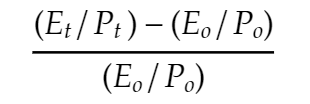
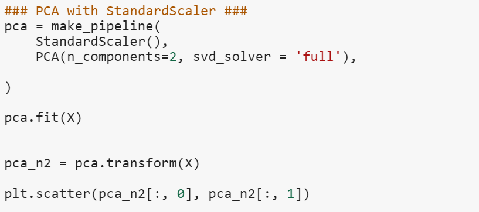
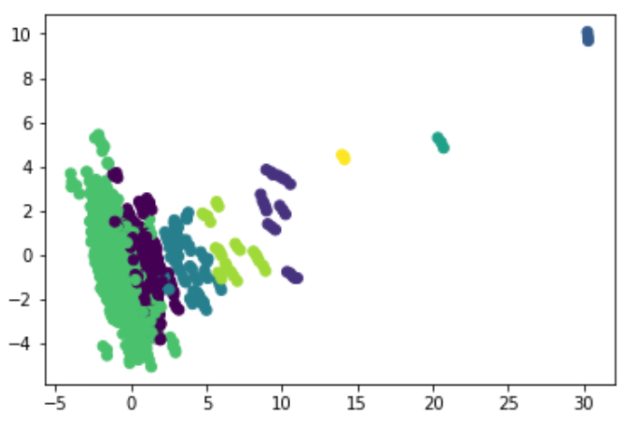
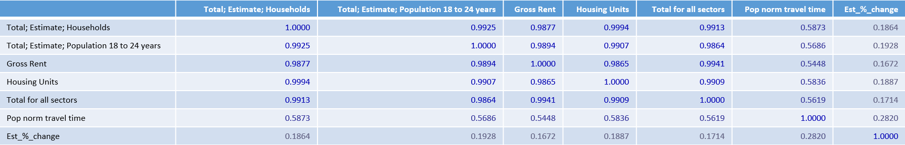
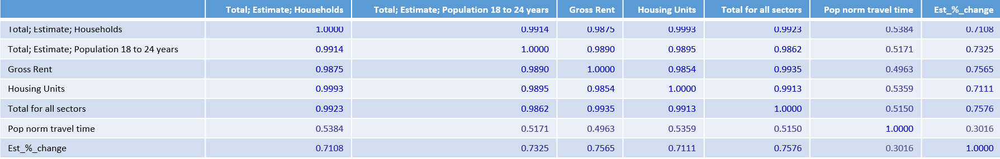

Our Team
aka the good guys
Doug AF Project Manager

M. Ahsan Lead Engineer

Mason Carnahan Data Manager

Christopher Fraizer D3 Developer

By Team Yellow 3.0
What is a city? This question when analyzed closely proved difficult to answer. A city is composed of a government, people, and the structures they inhabit and use in their daily life. We believe that these three broad categories can be quantified and analyzed. To do this we measure a city’s tax structure, demographic qualities, and growth of establishments then attempt to see how these qualities influence each other. This will help city officials, businesses, and voters plan policies for a better future.
It’s time to start thinking smart for smarter growth. Many cities that are seeing businesses grow have made it a point to plan for change, adopt a strategic approach and make decisions guided by data. When it comes to the future, one thing is for certain, change is inevitable. As a city, being prepared for change with data models ready and understanding the geopolitical trends today can better prepare you for healthy growth tomorrow.
After consulting some economic and business experts (via interwebs) we decided to break city data collection into 3 categories.
Then we collected data for each category ie. commute time, education level of population, and rigor of businesses tax law. We accomplished this using a combination of web scraping and downloading publicly available CSVs. After looking through our data we decided to focus on 'Establishments' as our key indicator of city business development.
The writers at census.gov define an establishment as:
"A single physical location where business is conducted or where services or industrial operations are performed. Data in this sector includes those establishments where manufacturing is performed."
Next we calculated a 'Business growth' index by measuring the change in a city's establishments from 2011 to 2016 and normalizing this measure over population as shown below.
Business growth =
Where Et is Establishments in 2016 and Po is Population in 2011. Thus we get a change in establishments over 5 years.
RESTful API and GeoJSONifying
Our data routes are populated via querying an SQLite database and formatting the data into a GeoJSON format. This nested dictionary format makes for easier accessing of data for visualization purposes.Check it out in the data route under the visualization tab above!
Visualizations
To display our data in an interactive way we decided to create a Leaflet interactive map and a scatter plot with toggleable X variables. The Leaflet map consists of a circle for each city that is colored to indicate business growth or shrinkage and whos radius is scaled by the magnitude of this change. Our scatter plot allows the user to search for correlation between a chosen X varable and business growth percentage. The scatter plot also provides information via hovertext so that one may transition between the Scatter and Map with a city or metric in mind.
Clustering: We built models using PCA and K means clustering.
Why did we cluster?
To see if cities grouped together in a meaningful way. Our results were less than ideal.
See our PCA code below
This is the resulting plot where clusters are represented with discrete colors.
As you can see above, the clusters are not great.There is very little separation between the green and purple clusers. Additionally the lime green, dark blue, yellow, and seafoam green cluseters contain very little data; almost as if they are capturing outliers. The vast majority of cities are grouped into the green cluster.
We suspect that cites could be broken into categories based on population; small, medium, large, and XL. Where larger cities would display more stability and constant growth and small and medium cities would have more variance.
Regression: We built linear, lasso, and Support vector regression models
Why did we use regression?
To give us a model to predict the behavior of cites in the future. Unfortunately our model was not robust enough to do this.
Note below the column to the far right. This shows the strenght of correlation to our Y variable, Establishment % Change. Most of our year to year intervals look like the data shown below.
Interestingly, our data showed much higher correlation for the year interval 2012-2013. Note the values in the far right column are much higher than the previous data.
Data
Methods
Next Steps
aka the good guys